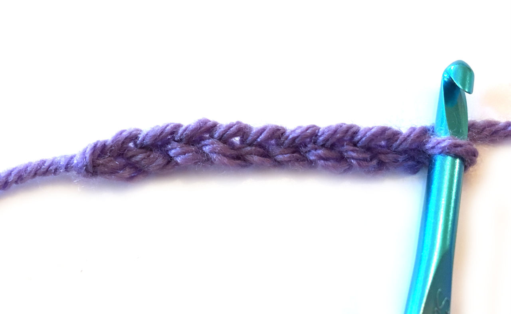
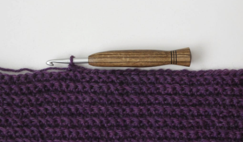
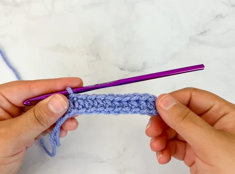
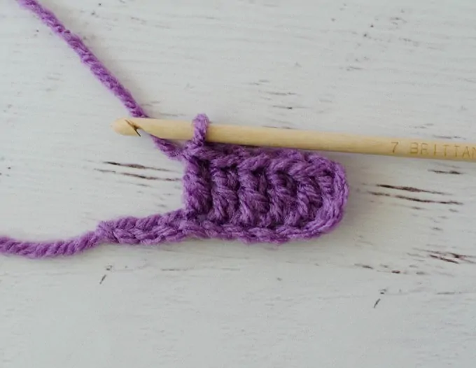

Stitches
Learn the stitches you'll use throughout your crochet journey.
Basic Stitches
These four stiches are the foundations of most crochet projects.

Chain Stitch
This stitch is used to creat a foundation row and to set the height for turning rows.

Single Crochet
This simple, versatile stitch is perfect to create tight, sturdy fabric.

Half Double Crochet
A Half-Double Crochet is a taller stitch that adds a little more height and texture.

Double Crochet
Known for being tall, flexible and fast-working, this stitct is common for blankets.
More Stitches
These two stiches will expand the project you're able to attempt.